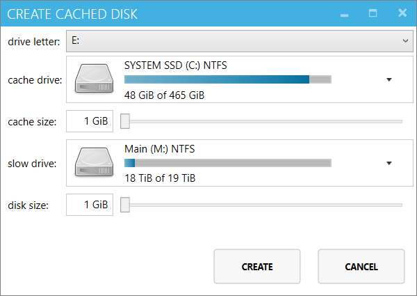
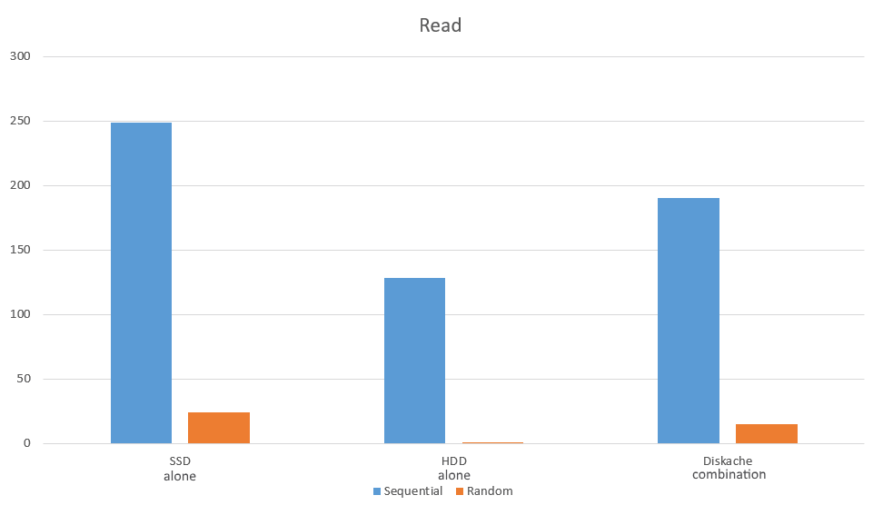
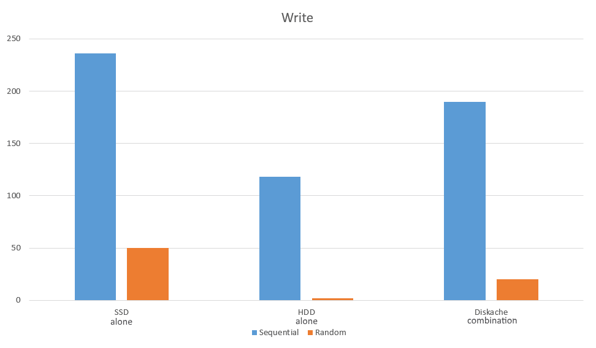

Windows 7 urges you to vote 'Yes' on Steam Greenlight.
Windows 7 urges you to vote 'Yes' on Steam Greenlight.
Faster storage for the same price
{ TL;DR; go to benchmark }
Usually, the faster your disk is, the more you pay for it per 1GB of storage. With Diskache you can use a small fast solid state drive to get the best performance on the files you need most, while enjoying full access to the terabytes of your HDDs.
Games will start faster
A single modern game with advanced graphics for a PC can now occupy more than 50GB of storage on its own. And if you want to install many of those, there's an all-or-nothing compromise: one of them will have to go to a slower disk, which means long "loading..." screen during launch and/or between scenes.
Navigating through your files quicker
Home photo and video collections also often end up on slow drives, and navigating through them becomes painfull while you wait for thumbnails to show up.
Better performance working with any files
Software source code, your company data assets, corporate email boxes, browser web page caches, especially combined, will eventually grow big enough to force you to decide, which of them you can tolerate being available at lower speed. But not with the Diskache.

Diskache can intelligently make this decision for you. Some 30 first seconds of each video clip from your collection will be cached on a fast disk, which will allow you to quickly navigate through movies, and start playback instantly. Game files will be distributed in accordance to how frequently they are being loaded. The files you are working on the most will be faster to write and read even though they will still lie in the same folder as others. Rarely accessed pieces of a local database will be automatically offloaded to a slower drive.
How does it work?
Diskache hides actual physical disks behind a virtual disk. Software remembers which data has been read and written to its virtual disk during your normal system operation, and also keeps track of access history and data usage patterns. This information is then used when a file is opened. Based on time, data size and location, Diskache will pick optimal physical disk to serve the request.

Diskache also moves data between the cache and the main storage in background to accomodate for the future requests.
Performance
Diskache has been tested on the following configuration:
- Main storage: a file on Western Digital Red 2TB HDD
- Cache storage: a file on Samsung 840 PRO SSD
- CPU: Intel Core i7 3930K
- RAM: 24GiB DDR3 Quad Channel 1600MHz
- MB: Intel DX79TO
Read performance, MB/s 
Write performance, MB/s 